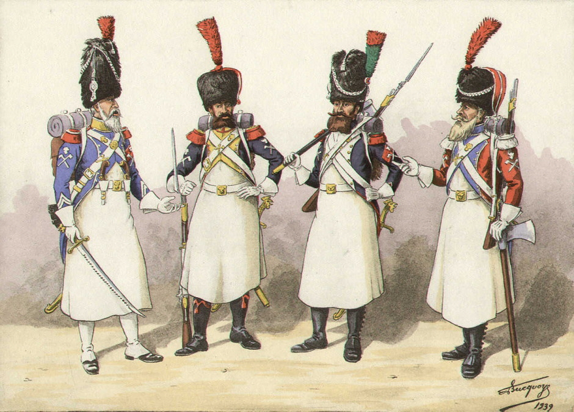
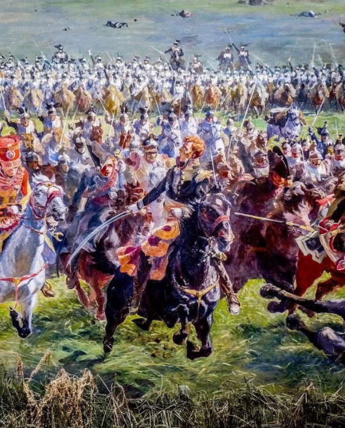
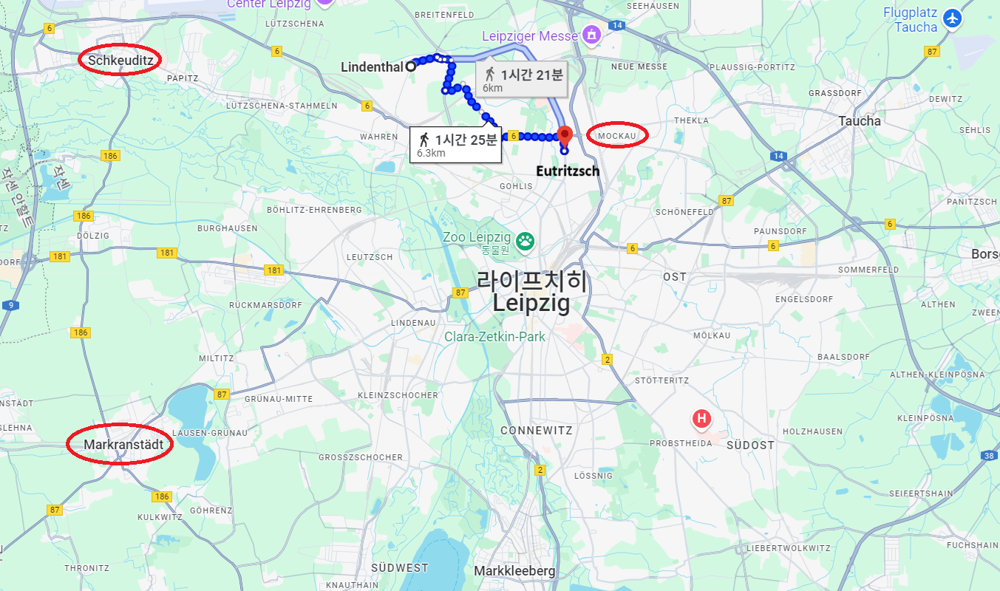

라이프치히 전투 (5) - 양치기 소년 마르몽
게시: 2025-06-23T08:44:32+09:00
마르몽 앞에 나타난 3명의 사내는 바로 이틀 전인 10월 13일 바로 북쪽의 델리츠쉬(Delitzsch) 근처에서 코삭 기병들에게 포로가 되었던 프랑스군 장교 1명과 공병(sappeurs) 2명이었습니다. 이들은 아군 초소에 나타나자마자 다급히 보고할 것이 있다고 주장했으며, 마르몽 앞에서 꽤 놀라운 정보를 전달했습니다. 이들의 말에 따르면 자기들은 할러(Halle)의 슐레지엔 방면군 사령부까지 끌려가서 취조를 받았으며 기회를 틈타 탈출한 것인데, 거기서 주워들은 것에 따르면 당장 내일 아침까지 슐레지엔 방면군 뿐만 아니라 베르나도트의 북부 방면군까지 이곳 린덴탈 인근에 도착할 수 있다는 것이었습니다.

(사푀르(sappeur)는 본문에서 공병이라고만 번역했습니다만, 정확하게는 전투공병 정도로 번역하는 것이 맞습니다. 이들은 필요시 보병들보다 먼저 투입되어 적의 목책이나 진지의 구조물을 도끼 등으로 찍어내고 아군의 진격을 돕는 역할을 했습니다. 이렇게 보면 치마를 입은 것 같지만 하얀 앞치마, 즉 에이프론입니다. 저건 설거지하라고 입은 것이 아니라 일의 특성상 나무조각이나 돌조각으로부터 하반신을 보호하기 위해 입은 가죽 앞치마로서, 갑옷에 가까운 것입니다.) 이들의 주장은 마르몽이 직접 목격한 적의 움직임과 일치했습니다. 당장 인근 마을인 헤니헨(Hänichen)까지 적 포병과 기병들이 진격해왔기 때문에 거기 배치해두었던 경계 초병들이 후퇴해야 했기 때문입니다. 마르몽은 이러한 내용을 보고서에 상세히 적어 15일 오후 9시경에 나폴레옹에게 보내며, 당장 내일 아침에 2개 방면군을 자신의 제6군단 하나로 상대해야 하니 늦기 전에 제3군단의 지휘권도 자신에게 달라고 재차 요구했습니다. 이어서 오후 10시경, 그는 린덴탈 마을의 가장 높은 관측소인 마을 교회 종탑에 직접 올라가 북서쪽 방면을 관찰했습니다. 굳이 망원경을 쓰지 않아도 그의 눈에는 무수히 많은 불빛들이 들어왔습니다. 할러에서 진격해오다 슈코이디츠(Schkeuditz) 인근에서 야영 중인 적군의 모닥불이었습니다. 다만 이미 1시간 전에 보고서를 보냈기 때문에, 그는 자신이 눈으로 본 이 사실은 굳이 나폴레옹에게 알리지 않았습니다. 이 무렵 나폴레옹의 마르몽에 대한 신뢰도는 그다지 높지 않았습니다. 비록 자신의 러시아 원정 참패로 인해 문책이 중단되기는 했지만, 명석한 나폴레옹은 작년 7월 마르몽의 살라망카 전투 결과를 결코 잊지 않았으며, 지난 십수년 동안 마르몽이 보여준 미적지근한 수준의 실력을 잘 기억하고 있었습니다. 특히 최근에 마르몽에게는 불만이 무척 많으며, 네에 대해서 끊임없이 험담을 늘어놓고 있다는 것을 잘 알고 있었습니다. 네도 (비록 훨씬 점잖게 애둘러 말하기는 했지만) 마르몽이 사사건건 명령에 불복종하며 자신만의 작전을 추구하고 있다는 것을 나폴레옹에게 고자질했기 때문이었습니다. 당장 내일 아침 라이프치히 북쪽에 10만이 훌쩍 넘을 2개 방면군 규모의 적군이 나타난다면 나폴레옹의 전략에 심각한 차질이 빚어질 수 밖에 없었으며, 어쩌면 전체 작전을 포기하고 지금이라도 결전 장소를 옮겨야 할 판국이었습니다. 그러나 나폴레옹은 마르몽의 보고를 믿지 않았습니다.

(붉은 머리의 네는 한번도 뛰어난 지략을 보여준 사람은 아니었으나, 그의 용기와 성실성은 누구나 인정했습니다. 위 그림은 네의 이력서에 영구히 치욕으로 남을 1815년 워털루에서의 기병 돌격입니다.)
15일 저녁 9시에 보냈던 보고서에 대해 나폴레옹이 새벽 3시에 쓴 답장이 마르몽에게 돌아온 것은 다음날 아침 8시 경이었습니다. 그러니까 나폴레옹도 거의 밤새도록 잠을 자지 않고 일을 하고 있었던 것입니다. 그 내용은 마르몽에게 분노를 일으키기에 충분했는데, 그 내용을 요약하면 이랬습니다. "자넨 뭔가 단단히 착각하고 있네. 자네 앞에는 그런 규모의 적군이 없어. 대체 보고서 꼬라지가 그게 뭔가? 잡힌 몸이라서 행동이 자유로울 수 없던 포로들이 어떻게 적의 편성과 규모를 다 파악할 수 있겠나? 자네가 직접 스파이를 보내어 적 정황을 파악했어야지. 볼모로 그 부인을 잡아둔 현지 농부 1명과 함께, 농부로 위장한 아군 병사 1명을 스파이로 보내는 것은 기본 중의 기본 아닌가? 그리고 대체 왜 기병대를 내보내 위력 정찰을 하지 않았나? 자넨 1개 군단을 거느리고 있는데도 1주일 동안 적의 포로를 단 1명도 잡지 못했는데, 그게 납득이 되는 일인가? 헛소리 그만 하고 린덴탈엔 최소한의 경비병만 남겨두고 라이프치히 남쪽으로 내려오게. 이제 곧 라이프치히 남쪽에서 결전이 벌어질 것인데, 그때 자네의 제6군단은 예비대로 써야겠네." 나폴레옹이 이렇게까지 마르몽의 말을 믿지 않은 것은 아마 2가지 이유에서였을 것입니다. 먼저 자신이 받은 다른 보고에 따르면 마르몽이 맡고 있는 할러 방면 북서쪽이 아니라 뤼첸 방면인 남서쪽의 마르크란슈테트(Markranstädt)에서 큰 규모의 야영 불빛이 목격되었습니다. 나폴레옹이 전에 받은 보고도 베르나도트는 할러 남쪽인 메르세부르크에 있다는 것이었습니다. 따라서 그는 베르나도트와 블뤼허가 올 방향은 할러 쪽이 아니라 뤼첸 쪽이라고 믿고 있었습니다. 다른 이유는 좀 더 마음이 아픈 것인데, 나폴레옹이 10월 16일 라이프치히 전투에서 승리하기 위해서는 할러 방면에서는 적군이 나타나서는 안 되었기 때문입니다. 그러니까 나폴레옹은 자기가 믿고 싶은 것만 믿기로 작정했던 것입니다.

(지도에 표시된 거리는 마르몽의 주둔지인 린덴탈과 베르트랑의 제4군단 주둔지인 오이트리츠쉬 사이의 거리입니다. 오이트리츠쉬 바로 오른쪽의 모카우(Mokau)는 나폴레옹이 전군의 보급품을 보관해둔 장소로서, 나폴레옹은 거기가 완전한 후방이라고 생각하고 있었습니다. 나폴레옹이 보고받은 적군의 야영 불빛이 목격된 마르크란슈테트와, 마르몽이 직접 적군 야영 불빛을 목격한 슈코이디츠의 위치를 보십시요. 전에 언급했듯이, 마르크란슈테트의 불빛은 귤라이의 오스트리아군 제3군단의 것이었습니다.) 아직 나폴레옹이 라이프치히에 도착하기 전에 나폴레옹이 뮈라에게 쓴 편지에서도 나폴레옹은 마르몽의 제6군단을 절대 제1선에 투입하지 말라고 신신당부하는 구절이 나옵니다. 마르몽의 제6군단은 병력 규모나 훈련 정도에 있어서도 꽤 튼실했고, 무엇보다 최근에 전투를 겪고 소모된 바가 없어서 알짜배기 군단이었던 것입니다. 나폴레옹은 아껴두었던 예비대를 절대절명의 순간에 딱 필요한 곳에 집중 투입하여 승리를 낚아내곤 했으므로 언제나 상당한 규모의 예비대를 인근에 쥐고 있어야 했고, 마르몽의 제6군단을 바로 그런 용도로 쓰려고 했습니다. 그런데 최근 불만이 많고 항상 따로 놀려고 하는 마르몽이 고작 포로 3명의 말만 듣고 할러 방면에서 대규모의 적군이 몰려오니까 오히려 북쪽으로 병력을 더 보내달라고 주장한다? 어림없는 수작이었습니다. 글쎄요. 마르몽이 보고서를 보낸지 1시간 후에 자신이 교회 종탑에서 적군의 대규모 야영 불빛을 직접 자기 눈으로 보았다는 소식을 추가로 보냈으면 어땠을까요? 나폴레옹이 그 말조차 믿지 않았을까요? 역사에 '만약'이라는 말은 아무 의미가 없는 것입니다만, 마르몽이 조금 더 보고서를 더 성실히 자주 써보냈다면 어땠을까요? 아무튼 자신의 잘못은 외면했던 마르몽은 이 답장을 받아들고 길길이 뛰었습니다. 적군 사령부까지 다녀온 아군 장교의 말을 못 믿는다면서 한낱 스파이의 말은 어떻게 믿을 것이며, 수백의 기병 밖에 가지지 못한 자신이 수천의 적군 기병대가 우글거리는 곳으로 어떻게 위력 정찰대를 보낼 수 있겠는가 하는 불만 때문이었습니다. 그렇게 길길이 뛰는 마르몽에게 나폴레옹의 참모장 베르티에가 전날 밤 보낸 명령서도 함께 날아들었습니다. 그 내용은 더욱 복장이 터지는 것이었습니다. "당신 위치로부터 동쪽으로 불과 3~4km 떨어진 오이트리츠쉬(Eutritzsch)에 베르트랑의 제4군단이 10월 14일부터 주둔하고 있었는데, 아직까지도 베르트랑과 어떠한 교신도 주고 받지 않았다니 정말 놀랍다. 당신 뭐하는 사람인가? 당장 16일 아침 7시까지 황제께서는 리베르트볼크비츠(Liebertwolkwitz) 언덕에 사령부를 차리실 예정이니 거기로 달려오라. 라이프치히 북쪽은 베르트랑이 맡을 것이다." 그러나 다들 아시다시피, 상황은 나폴레옹의 뜻대로 돌아가지는 않았습니다. Source : The Life of Napoleon Bonaparte, by William Milligan Sloane Napoleon and the Struggle for Germany, by Leggiere, Michael V With Napoleon's Guns by Colonel Jean-Nicolas-Auguste Noël https://www.britannica.com/event/Napoleonic-Wars/Dispositions-for-the-autumn-campaign http://www.historyofwar.org/articles/campaign_leipzig.html https://warhistory.org/@msw/article/leipzig-battle-of-the-nations https://www.encyclopedia.com/history/encyclopedias-almanacs-transcripts-and-maps/leipzig-battle-0 http://www.sappeur.net/html/sappeur.html